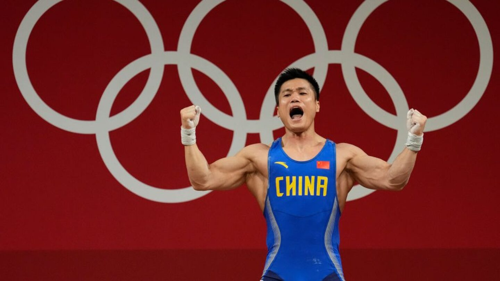

Andy Bolton
Bolton venceu sua primeira competição em 1991, quando tinha vinte e um anos de idade, em um evento de levantamento de peso básico local chamado BAWLA Yorkshire Junior Championships. Desde então, Bolton competiu na World Powerlifting Organization (WPO) e na World Powerlifting Congress (WPC).[carece de fontes] Ele é o atual "recordista mundial" da WPO (1273 kg/2806 lb). Bolton também detém os recordes do mundo WPO no agachamento (550,5 kg/1213 lb) e levantamento terra (457,5 kg/1009 lb), e foi o primeiro homem a efectuar um levantamento terra de mais de mil libras. Suas realizações incluem a colocação em quinto lugar no Arnold Classic Strongman de 2002

Eddie Hall
Edward Stephen Hall (nascido em 15 de janeiro de 1988) é uma personalidade da mídia britânica e um strongman aposentado . Ele é mais conhecido por seu levantamento terra recorde mundial de 500 kg (1.102 lb) em 2016, que é amplamente considerado um dos maiores feitos da história dos strongmen. Ele também é conhecido por vencer a competição World's Strongest Man de 2017. Hall venceu competições nacionais como o Homem Mais Forte da Inglaterra, o Homem Mais Forte da Grã-Bretanha e o Homem Mais Forte do Reino Unido várias vezes. Em 2022, ele foi derrotado pelo também vencedor do Homem Mais Forte do Mundo Hafþór Júlíus Björnsson em uma luta de boxe que foi chamada de "A Luta de Boxe Mais Pesada da História". Ele apresentou sua própria série de televisão chamada Eddie Eats America (2018) e foi destaque na série do History Channel The Strongest Man in History (2019). Ele teve seu primeiro papel como ator como figurante no filme de ação Expend4bles (2023).
.jpg)
Halfthor-Bjornsson
Hafþór Júlíus "Thor" Björnsson (ou "Hafþór Júlíus Björnsson"; nascido em 26 de novembro de 1988) é um atleta de força, ator e ex-jogador de basquete profissional islandês. Sua habilidade como atleta de força e seu corpo enorme o levaram ao papel do personagem Gregor Clegane na série de televisão Game of Thrones, onde foi mundialmente notado. Hafþor terminou em segundo lugar no inaugural clássico de Jón Páll Sigmarsson, ficando atrás apenas do norte-americano Brian Shaw. Também ganhou em 2011 o título de Homem Mais Forte da Islândia nos concursos realizados em 4 e 18 de junho de 2011. Hafþor ficou em quarto lugar no campeonato polonês Giants Live (Gigantes ao Vivo, em português) em 6 de agosto de 2011. Em 31 de janeiro de 2015, Björnsson quebrou o recorde milenar estabelecido por Orm Storolfsson na competição norueguesa World's Strongest Viking (O Viking Mais Forte do Mundo, em português), ao carregar um peso de 1.433 libras (650 kg) e 9,8m de largura por cinco passos.

Lu Xiaojun (chinês: 吕小军; Huangshi, Hubei, 27 de julho de 1984) é um halterofilista chinês, bicampeão olímpico. Seu nome também é transliterado Lyu para o inglês.